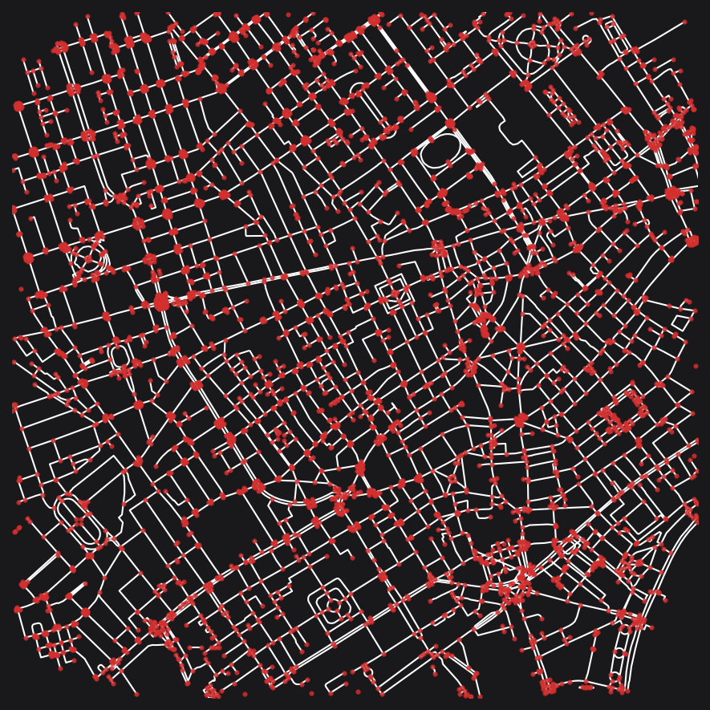
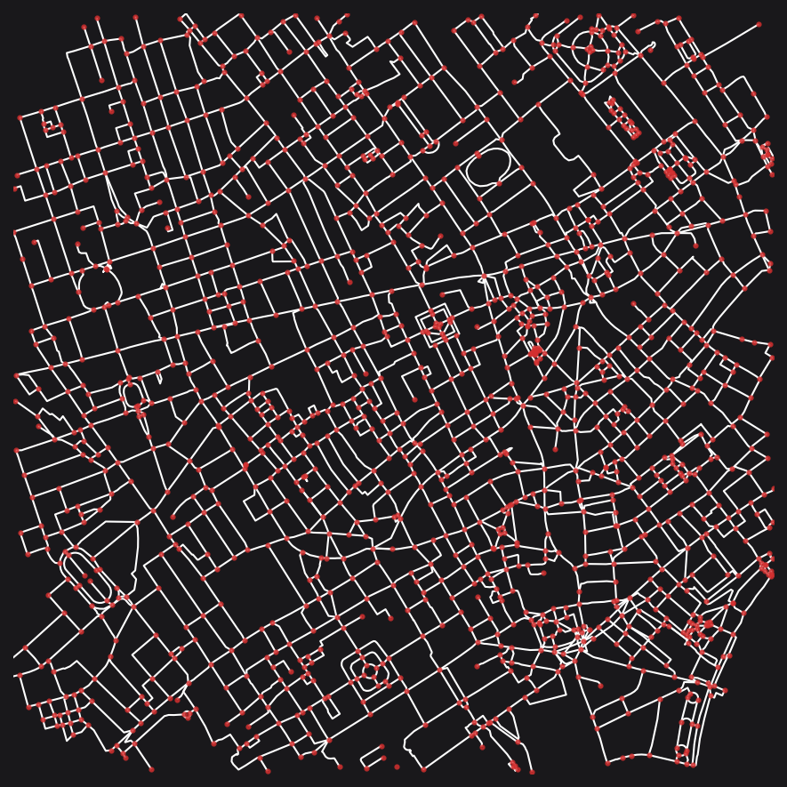
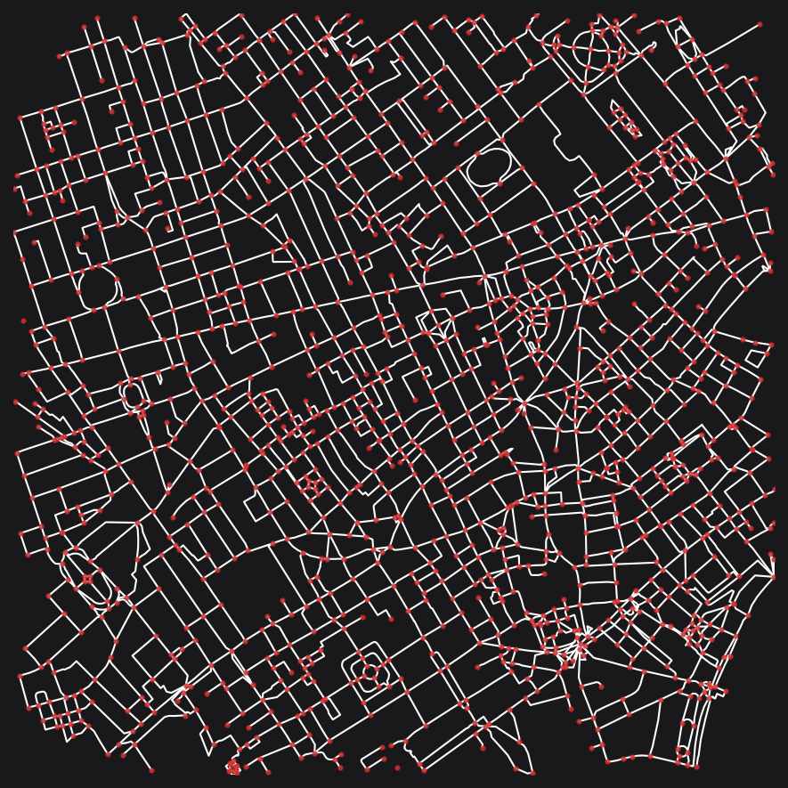

# !pip install --upgrade cityseerGraph Cleaning
Install and update cityseer if necessary.
See the guide for a preamble.
Downloading data
This example will make use of OSM data downloaded from the OSM API. To keep things interesting, let’s pick London Soho, which will be buffered and cleaned for a 1,250m radius.
from shapely import geometry
import utm
from cityseer.tools import graphs, plot, io
# Let's download data within a 1,250m buffer around London Soho:
lng, lat = -0.13396079424572427, 51.51371088849723
# lng, lat = 2.166981, 41.389526 -- Barcelona - which is a complex case
buffer = 1250
# creates a WGS shapely polygon
poly_wgs, _ = io.buffered_point_poly(lng, lat, buffer)
# use a WGS shapely polygon to download information from OSM
# this version will not simplify
G_raw = io.osm_graph_from_poly(poly_wgs, simplify=False)
# whereas this version does simplify
G_utm = io.osm_graph_from_poly(poly_wgs)
# select extents for clipping the plotting extents
easting, northing = utm.from_latlon(lat, lng)[:2]
buff = geometry.Point(easting, northing).buffer(1000)
min_x, min_y, max_x, max_y = buff.bounds
# reusable plot function
def simple_plot(_G, plot_geoms=True):
# plot using the selected extents
plot.plot_nx(
_G,
labels=False,
plot_geoms=plot_geoms,
node_size=4,
edge_width=1,
x_lim=(min_x, max_x),
y_lim=(min_y, max_y),
figsize=(6, 6),
dpi=150,
)WARNING:cityseer.tools.io:Merging node 12450391665 into 25544116 due to identical x, y coords.
WARNING:cityseer.tools.io:Unable to parse level info: -`;-4
WARNING:cityseer.tools.io:Unable to parse level info: -`;-4
WARNING:cityseer.tools.io:Unable to parse level info: -`;-4
INFO:cityseer.tools.io:Converting networkX graph from EPSG code 4326 to EPSG code 32630.
INFO:cityseer.tools.io:Processing node x, y coordinates.
100%|██████████| 16483/16483 [00:00<00:00, 117745.05it/s]
INFO:cityseer.tools.io:Processing edge geom coordinates, if present.
100%|██████████| 17715/17715 [00:00<00:00, 611917.61it/s]
INFO:cityseer.tools.graphs:Generating interpolated edge geometries.
100%|██████████| 17715/17715 [00:00<00:00, 46052.43it/s]
INFO:cityseer.tools.graphs:Removing filler nodes.
100%|██████████| 16483/16483 [00:01<00:00, 8732.22it/s]
WARNING:cityseer.tools.io:Merging node 12450391665 into 25544116 due to identical x, y coords.
WARNING:cityseer.tools.io:Unable to parse level info: -`;-4
WARNING:cityseer.tools.io:Unable to parse level info: -`;-4
WARNING:cityseer.tools.io:Unable to parse level info: -`;-4
INFO:cityseer.tools.io:Converting networkX graph from EPSG code 4326 to EPSG code 32630.
INFO:cityseer.tools.io:Processing node x, y coordinates.
100%|██████████| 16483/16483 [00:00<00:00, 500530.06it/s]
INFO:cityseer.tools.io:Processing edge geom coordinates, if present.
100%|██████████| 17715/17715 [00:00<00:00, 907672.80it/s]
INFO:cityseer.tools.graphs:Generating interpolated edge geometries.
100%|██████████| 17715/17715 [00:00<00:00, 47717.34it/s]
INFO:cityseer.tools.graphs:Removing filler nodes.
100%|██████████| 16483/16483 [00:01<00:00, 8708.23it/s]
INFO:cityseer.tools.util:Creating edges STR tree.
100%|██████████| 9182/9182 [00:00<00:00, 512510.64it/s]
100%|██████████| 9182/9182 [00:03<00:00, 2385.28it/s]
INFO:cityseer.tools.graphs:Removing filler nodes.
100%|██████████| 7950/7950 [00:00<00:00, 9643.96it/s]
100%|██████████| 5581/5581 [00:00<00:00, 44227.06it/s]
INFO:cityseer.tools.graphs:Removing dangling nodes.
INFO:cityseer.tools.graphs:Removing filler nodes.
100%|██████████| 6864/6864 [00:00<00:00, 306100.84it/s]
INFO:cityseer.tools.util:Creating edges STR tree.
100%|██████████| 5039/5039 [00:00<00:00, 516876.93it/s]
INFO:cityseer.tools.graphs:Splitting opposing edges.
100%|██████████| 3999/3999 [00:00<00:00, 120289.31it/s]
INFO:cityseer.tools.graphs:Squashing opposing nodes
INFO:cityseer.tools.graphs:Merging parallel edges within buffer of 25.
100%|██████████| 5039/5039 [00:00<00:00, 14447.39it/s]
INFO:cityseer.tools.util:Creating edges STR tree.
100%|██████████| 5007/5007 [00:00<00:00, 451369.75it/s]
INFO:cityseer.tools.graphs:Splitting opposing edges.
100%|██████████| 3999/3999 [00:00<00:00, 10537.05it/s]
INFO:cityseer.tools.graphs:Squashing opposing nodes
INFO:cityseer.tools.graphs:Merging parallel edges within buffer of 25.
100%|██████████| 5059/5059 [00:00<00:00, 133702.48it/s]
INFO:cityseer.tools.util:Creating edges STR tree.
100%|██████████| 5050/5050 [00:00<00:00, 458935.18it/s]
INFO:cityseer.tools.graphs:Splitting opposing edges.
100%|██████████| 3999/3999 [00:00<00:00, 64258.79it/s]
INFO:cityseer.tools.graphs:Squashing opposing nodes
INFO:cityseer.tools.graphs:Merging parallel edges within buffer of 25.
100%|██████████| 5051/5051 [00:00<00:00, 197389.59it/s]
INFO:cityseer.tools.util:Creating edges STR tree.
100%|██████████| 5051/5051 [00:00<00:00, 472330.27it/s]
INFO:cityseer.tools.graphs:Splitting opposing edges.
100%|██████████| 3999/3999 [00:00<00:00, 42718.90it/s]
INFO:cityseer.tools.graphs:Squashing opposing nodes
INFO:cityseer.tools.graphs:Merging parallel edges within buffer of 25.
100%|██████████| 5052/5052 [00:00<00:00, 194659.17it/s]
INFO:cityseer.tools.util:Creating nodes STR tree
100%|██████████| 3999/3999 [00:00<00:00, 71103.46it/s]
INFO:cityseer.tools.graphs:Consolidating nodes.
100%|██████████| 3999/3999 [00:00<00:00, 113514.54it/s]
INFO:cityseer.tools.graphs:Merging parallel edges within buffer of 25.
100%|██████████| 5052/5052 [00:00<00:00, 153639.29it/s]
INFO:cityseer.tools.graphs:Removing filler nodes.
100%|██████████| 3999/3999 [00:00<00:00, 202308.84it/s]
INFO:cityseer.tools.util:Creating nodes STR tree
100%|██████████| 3957/3957 [00:00<00:00, 8310.46it/s]
INFO:cityseer.tools.graphs:Consolidating nodes.
100%|██████████| 3957/3957 [00:00<00:00, 12422.73it/s]
INFO:cityseer.tools.graphs:Merging parallel edges within buffer of 25.
100%|██████████| 4618/4618 [00:00<00:00, 30513.54it/s]
INFO:cityseer.tools.graphs:Removing filler nodes.
100%|██████████| 3648/3648 [00:00<00:00, 201157.20it/s]
INFO:cityseer.tools.util:Creating nodes STR tree
100%|██████████| 3620/3620 [00:00<00:00, 68650.27it/s]
INFO:cityseer.tools.graphs:Consolidating nodes.
100%|██████████| 3620/3620 [00:00<00:00, 28534.29it/s]
INFO:cityseer.tools.graphs:Merging parallel edges within buffer of 25.
100%|██████████| 4449/4449 [00:00<00:00, 112491.01it/s]
INFO:cityseer.tools.graphs:Removing filler nodes.
100%|██████████| 3584/3584 [00:00<00:00, 383518.36it/s]
INFO:cityseer.tools.util:Creating nodes STR tree
100%|██████████| 3576/3576 [00:00<00:00, 70631.60it/s]
INFO:cityseer.tools.graphs:Consolidating nodes.
100%|██████████| 3576/3576 [00:00<00:00, 23170.23it/s]
INFO:cityseer.tools.graphs:Merging parallel edges within buffer of 25.
100%|██████████| 4345/4345 [00:00<00:00, 136596.17it/s]
INFO:cityseer.tools.graphs:Removing filler nodes.
100%|██████████| 3507/3507 [00:00<00:00, 453043.74it/s]
INFO:cityseer.tools.util:Creating nodes STR tree
100%|██████████| 3502/3502 [00:00<00:00, 75331.19it/s]
INFO:cityseer.tools.util:Creating edges STR tree.
100%|██████████| 4334/4334 [00:00<00:00, 819461.46it/s]
INFO:cityseer.tools.graphs:Snapping gapped endings.
100%|██████████| 3502/3502 [00:00<00:00, 7302.62it/s]
INFO:cityseer.tools.util:Creating edges STR tree.
100%|██████████| 4496/4496 [00:00<00:00, 15225.16it/s]
INFO:cityseer.tools.graphs:Splitting opposing edges.
100%|██████████| 3502/3502 [00:00<00:00, 6340.29it/s]
INFO:cityseer.tools.graphs:Merging parallel edges within buffer of 25.
100%|██████████| 5205/5205 [00:00<00:00, 188554.04it/s]
INFO:cityseer.tools.graphs:Removing dangling nodes.
100%|██████████| 3903/3903 [00:00<00:00, 88855.91it/s]
INFO:cityseer.tools.graphs:Removing filler nodes.
100%|██████████| 3297/3297 [00:00<00:00, 9293.16it/s]
INFO:cityseer.tools.util:Creating edges STR tree.
100%|██████████| 3678/3678 [00:00<00:00, 761659.43it/s]
INFO:cityseer.tools.graphs:Splitting opposing edges.
100%|██████████| 2377/2377 [00:00<00:00, 5503.38it/s]
INFO:cityseer.tools.graphs:Squashing opposing nodes
INFO:cityseer.tools.graphs:Merging parallel edges within buffer of 25.
100%|██████████| 3706/3706 [00:00<00:00, 63557.86it/s]
INFO:cityseer.tools.util:Creating nodes STR tree
100%|██████████| 2377/2377 [00:00<00:00, 64932.89it/s]
INFO:cityseer.tools.graphs:Consolidating nodes.
100%|██████████| 2377/2377 [00:00<00:00, 3174.54it/s]
INFO:cityseer.tools.graphs:Merging parallel edges within buffer of 25.
100%|██████████| 2894/2894 [00:00<00:00, 18063.00it/s]
INFO:cityseer.tools.util:Creating edges STR tree.
100%|██████████| 2742/2742 [00:00<00:00, 496536.64it/s]
INFO:cityseer.tools.graphs:Splitting opposing edges.
100%|██████████| 1832/1832 [00:00<00:00, 6225.44it/s]
INFO:cityseer.tools.graphs:Squashing opposing nodes
INFO:cityseer.tools.graphs:Merging parallel edges within buffer of 25.
100%|██████████| 2747/2747 [00:00<00:00, 145892.99it/s]
INFO:cityseer.tools.util:Creating nodes STR tree
100%|██████████| 1832/1832 [00:00<00:00, 69388.69it/s]
INFO:cityseer.tools.graphs:Consolidating nodes.
100%|██████████| 1832/1832 [00:02<00:00, 800.63it/s]
INFO:cityseer.tools.graphs:Merging parallel edges within buffer of 25.
100%|██████████| 2360/2360 [00:00<00:00, 12413.91it/s]
INFO:cityseer.tools.graphs:Removing filler nodes.
100%|██████████| 1505/1505 [00:00<00:00, 16539.88it/s]
INFO:cityseer.tools.graphs:Merging parallel edges within buffer of 50.
100%|██████████| 2183/2183 [00:00<00:00, 27668.57it/s]
INFO:cityseer.tools.graphs:Ironing edges.
100%|██████████| 2166/2166 [00:00<00:00, 9351.68it/s]
INFO:cityseer.tools.graphs:Merging parallel edges within buffer of 1.
100%|██████████| 2155/2155 [00:00<00:00, 203689.58it/s]
INFO:cityseer.tools.graphs:Removing dangling nodes.
100%|██████████| 1397/1397 [00:00<00:00, 235906.38it/s]
INFO:cityseer.tools.graphs:Removing filler nodes.
100%|██████████| 1385/1385 [00:00<00:00, 97473.21it/s]The automated graph cleaning may give satisfactory results depending on the intended end-use. See the steps following beneath for an example of how to manually clean the graph where additional control is preferred.
print("The graph before simplification.")
simple_plot(G_raw, plot_geoms=True)
print("The graph after simplification")
simple_plot(G_utm, plot_geoms=True)INFO:cityseer.tools.plot:Preparing graph nodes
INFO:cityseer.tools.plot:Preparing graph edgesThe graph before simplification.100%|██████████| 9182/9182 [00:01<00:00, 8435.27it/s] 
INFO:cityseer.tools.plot:Preparing graph nodes
INFO:cityseer.tools.plot:Preparing graph edgesThe graph after simplification100%|██████████| 2114/2114 [00:00<00:00, 22936.89it/s]
Manual cleaning
The automated simplification uses a number of steps and should generally give a solid starting point for further customised cleaning. The following is the steps followed by the automatic cleaning routine. You can adapt this to work for context specific considerations such as which OSM road types to clean and what distances to use.
# deduplicate by hierarchy
G = graphs.nx_deduplicate_edges(G_raw, dissolve_distance=20, max_ang_diff=20)
# remove disconnected components
G = graphs.nx_remove_dangling_nodes(G, despine=0, remove_disconnected=100)
# clean by highway types - leave motorways alone
# split only for a given type at a time
for dist, tags, max_angle in (
(28, ["trunk"], 45),
(24, ["primary"], 45),
(20, ["secondary"], 45),
(16, ["tertiary"], 45),
):
G = graphs.nx_split_opposing_geoms(
G,
buffer_dist=dist,
squash_nodes=True,
centroid_by_itx=True,
osm_hwy_target_tags=tags,
osm_matched_tags_only=True,
prioritise_by_hwy_tag=True,
simplify_by_max_angle=max_angle,
)
# consolidate
for dist, tags, max_angle in (
(28, ["trunk"], 95),
(24, ["trunk", "primary"], 95),
(20, ["trunk", "primary", "secondary"], 95),
(16, ["trunk", "primary", "secondary", "tertiary"], 95),
):
G = graphs.nx_consolidate_nodes(
G,
buffer_dist=dist,
crawl=False,
centroid_by_itx=True,
osm_hwy_target_tags=tags,
osm_matched_tags_only=True,
prioritise_by_hwy_tag=True,
simplify_by_max_angle=max_angle,
)
G = graphs.nx_remove_filler_nodes(G)
# snap gapped endings - don't clean danglers before this
G = graphs.nx_snap_gapped_endings(
G,
osm_hwy_target_tags=[
"residential",
"living_street",
# "service", # intentionally omitted - e.g. parking lots
"cycleway",
"bridleway",
"pedestrian",
"steps",
"footway",
"footway_green",
"footway_pedestrian", # plazas
"path",
],
buffer_dist=20,
)
# snap gapped endings to roads - don't clean danglers before this
# look for degree 1 dead-ends and link to nearby edges
G = graphs.nx_split_opposing_geoms(
G,
buffer_dist=20,
osm_hwy_target_tags=[
# "trunk", # intentionally omitted
"primary",
"primary_link",
"secondary",
"secondary_link",
"tertiary",
"tertiary_link",
"residential",
"living_street",
# "service", # intentionally omitted - e.g. parking lots
"cycleway",
"bridleway",
"pedestrian",
"steps",
"footway",
"footway_green",
"footway_pedestrian", # plazas
"path",
],
min_node_degree=1,
max_node_degree=1,
squash_nodes=False,
)
# remove danglers
G = graphs.nx_remove_dangling_nodes(G, despine=40)
# do smaller scale cleaning
max_angle = 120 # rue de nevers in Paris
for dist in (5, 10):
G = graphs.nx_split_opposing_geoms(
G,
buffer_dist=dist,
squash_nodes=True,
centroid_by_itx=True,
osm_hwy_target_tags=[
# "trunk", # intentionally omitted
"primary",
"primary_link",
"secondary",
"secondary_link",
"tertiary",
"tertiary_link",
"residential",
"living_street",
"service",
"cycleway",
"bridleway",
"pedestrian",
# "steps",
"footway",
"footway_pedestrian", # plazas
"path",
"unclassified",
],
prioritise_by_hwy_tag=True,
simplify_by_max_angle=max_angle,
)
G = graphs.nx_consolidate_nodes(
G,
buffer_dist=dist,
crawl=True,
centroid_by_itx=True,
osm_hwy_target_tags=[
"trunk",
"trunk_link",
"primary",
"primary_link",
"secondary",
"secondary_link",
"tertiary",
"tertiary_link",
"residential",
"living_street",
"service",
"cycleway",
"bridleway",
"pedestrian",
"steps",
"footway",
"footway_pedestrian", # plazas
"path",
"unclassified",
],
prioritise_by_hwy_tag=True,
simplify_by_max_angle=max_angle,
)
G = graphs.nx_remove_filler_nodes(G)
G = graphs.nx_merge_parallel_edges(
G, merge_edges_by_midline=True, contains_buffer_dist=50
)
G = graphs.nx_iron_edges(G, min_self_loop_length=100, max_foot_tunnel_length=100)
# do this last to clean up any orphaned sub components
G = graphs.nx_remove_dangling_nodes(G, despine=25)
simple_plot(G, plot_geoms=True)INFO:cityseer.tools.util:Creating edges STR tree.
100%|██████████| 9182/9182 [00:00<00:00, 586002.73it/s]
100%|██████████| 9182/9182 [00:04<00:00, 2058.73it/s]
INFO:cityseer.tools.graphs:Removing filler nodes.
100%|██████████| 7950/7950 [00:00<00:00, 13267.85it/s]
INFO:cityseer.tools.graphs:Removing dangling nodes.
INFO:cityseer.tools.graphs:Removing filler nodes.
100%|██████████| 6864/6864 [00:00<00:00, 536420.77it/s]
INFO:cityseer.tools.util:Creating edges STR tree.
100%|██████████| 5392/5392 [00:00<00:00, 520307.53it/s]
INFO:cityseer.tools.graphs:Splitting opposing edges.
100%|██████████| 4226/4226 [00:00<00:00, 128363.90it/s]
INFO:cityseer.tools.graphs:Squashing opposing nodes
INFO:cityseer.tools.graphs:Merging parallel edges within buffer of 25.
100%|██████████| 5392/5392 [00:00<00:00, 82899.04it/s]
INFO:cityseer.tools.util:Creating edges STR tree.
100%|██████████| 5354/5354 [00:00<00:00, 491600.34it/s]
INFO:cityseer.tools.graphs:Splitting opposing edges.
100%|██████████| 4226/4226 [00:00<00:00, 15992.07it/s]
INFO:cityseer.tools.graphs:Squashing opposing nodes
INFO:cityseer.tools.graphs:Merging parallel edges within buffer of 25.
100%|██████████| 5406/5406 [00:00<00:00, 146662.14it/s]
INFO:cityseer.tools.util:Creating edges STR tree.
100%|██████████| 5397/5397 [00:00<00:00, 620131.46it/s]
INFO:cityseer.tools.graphs:Splitting opposing edges.
100%|██████████| 4226/4226 [00:00<00:00, 72493.63it/s]
INFO:cityseer.tools.graphs:Squashing opposing nodes
INFO:cityseer.tools.graphs:Merging parallel edges within buffer of 25.
100%|██████████| 5398/5398 [00:00<00:00, 178593.65it/s]
INFO:cityseer.tools.util:Creating edges STR tree.
100%|██████████| 5398/5398 [00:00<00:00, 581444.13it/s]
INFO:cityseer.tools.graphs:Splitting opposing edges.
100%|██████████| 4226/4226 [00:00<00:00, 44933.58it/s]
INFO:cityseer.tools.graphs:Squashing opposing nodes
INFO:cityseer.tools.graphs:Merging parallel edges within buffer of 25.
100%|██████████| 5399/5399 [00:00<00:00, 186920.52it/s]
INFO:cityseer.tools.util:Creating nodes STR tree
100%|██████████| 4226/4226 [00:00<00:00, 73037.29it/s]
INFO:cityseer.tools.graphs:Consolidating nodes.
100%|██████████| 4226/4226 [00:00<00:00, 139938.17it/s]
INFO:cityseer.tools.graphs:Merging parallel edges within buffer of 25.
100%|██████████| 5399/5399 [00:00<00:00, 187367.49it/s]
INFO:cityseer.tools.graphs:Removing filler nodes.
100%|██████████| 4226/4226 [00:00<00:00, 201275.53it/s]
INFO:cityseer.tools.util:Creating nodes STR tree
100%|██████████| 4172/4172 [00:00<00:00, 15975.27it/s]
INFO:cityseer.tools.graphs:Consolidating nodes.
100%|██████████| 4172/4172 [00:00<00:00, 16063.08it/s]
INFO:cityseer.tools.graphs:Merging parallel edges within buffer of 25.
100%|██████████| 4953/4953 [00:00<00:00, 38370.05it/s]
INFO:cityseer.tools.graphs:Removing filler nodes.
100%|██████████| 3863/3863 [00:00<00:00, 221680.07it/s]
INFO:cityseer.tools.util:Creating nodes STR tree
100%|██████████| 3834/3834 [00:00<00:00, 62668.40it/s]
INFO:cityseer.tools.graphs:Consolidating nodes.
100%|██████████| 3834/3834 [00:00<00:00, 35092.50it/s]
INFO:cityseer.tools.graphs:Merging parallel edges within buffer of 25.
100%|██████████| 4782/4782 [00:00<00:00, 120493.83it/s]
INFO:cityseer.tools.graphs:Removing filler nodes.
100%|██████████| 3798/3798 [00:00<00:00, 404817.33it/s]
INFO:cityseer.tools.util:Creating nodes STR tree
100%|██████████| 3790/3790 [00:00<00:00, 80401.86it/s]
INFO:cityseer.tools.graphs:Consolidating nodes.
100%|██████████| 3790/3790 [00:00<00:00, 24990.43it/s]
INFO:cityseer.tools.graphs:Merging parallel edges within buffer of 25.
100%|██████████| 4678/4678 [00:00<00:00, 146677.89it/s]
INFO:cityseer.tools.graphs:Removing filler nodes.
100%|██████████| 3721/3721 [00:00<00:00, 442764.48it/s]
INFO:cityseer.tools.util:Creating nodes STR tree
100%|██████████| 3716/3716 [00:00<00:00, 68321.44it/s]
INFO:cityseer.tools.util:Creating edges STR tree.
100%|██████████| 4667/4667 [00:00<00:00, 677352.74it/s]
INFO:cityseer.tools.graphs:Snapping gapped endings.
100%|██████████| 3716/3716 [00:00<00:00, 7850.84it/s]
INFO:cityseer.tools.util:Creating edges STR tree.
100%|██████████| 4832/4832 [00:00<00:00, 515526.08it/s]
INFO:cityseer.tools.graphs:Splitting opposing edges.
100%|██████████| 3716/3716 [00:00<00:00, 5085.02it/s]
INFO:cityseer.tools.graphs:Merging parallel edges within buffer of 25.
100%|██████████| 5587/5587 [00:00<00:00, 142747.52it/s]
INFO:cityseer.tools.graphs:Removing dangling nodes.
100%|██████████| 4144/4144 [00:00<00:00, 185587.48it/s]
INFO:cityseer.tools.graphs:Removing filler nodes.
100%|██████████| 3536/3536 [00:00<00:00, 9568.88it/s]
INFO:cityseer.tools.util:Creating edges STR tree.
100%|██████████| 4029/4029 [00:00<00:00, 403034.91it/s]
INFO:cityseer.tools.graphs:Splitting opposing edges.
100%|██████████| 2587/2587 [00:00<00:00, 4086.35it/s]
INFO:cityseer.tools.graphs:Squashing opposing nodes
INFO:cityseer.tools.graphs:Merging parallel edges within buffer of 25.
100%|██████████| 4060/4060 [00:00<00:00, 45621.53it/s]
INFO:cityseer.tools.util:Creating nodes STR tree
100%|██████████| 2587/2587 [00:00<00:00, 38441.00it/s]
INFO:cityseer.tools.graphs:Consolidating nodes.
100%|██████████| 2587/2587 [00:01<00:00, 1982.94it/s]
INFO:cityseer.tools.graphs:Merging parallel edges within buffer of 25.
100%|██████████| 3232/3232 [00:00<00:00, 11102.79it/s]
INFO:cityseer.tools.util:Creating edges STR tree.
100%|██████████| 3073/3073 [00:00<00:00, 379906.75it/s]
INFO:cityseer.tools.graphs:Splitting opposing edges.
100%|██████████| 2027/2027 [00:00<00:00, 3760.82it/s]
INFO:cityseer.tools.graphs:Squashing opposing nodes
INFO:cityseer.tools.graphs:Merging parallel edges within buffer of 25.
100%|██████████| 3082/3082 [00:00<00:00, 70168.41it/s]
INFO:cityseer.tools.util:Creating nodes STR tree
100%|██████████| 2027/2027 [00:00<00:00, 34229.50it/s]
INFO:cityseer.tools.graphs:Consolidating nodes.
100%|██████████| 2027/2027 [00:00<00:00, 2147.97it/s]
INFO:cityseer.tools.graphs:Merging parallel edges within buffer of 25.
100%|██████████| 2646/2646 [00:00<00:00, 19124.02it/s]
INFO:cityseer.tools.graphs:Removing filler nodes.
100%|██████████| 1659/1659 [00:00<00:00, 27781.06it/s]
INFO:cityseer.tools.graphs:Merging parallel edges within buffer of 50.
100%|██████████| 2466/2466 [00:00<00:00, 46319.33it/s]
INFO:cityseer.tools.graphs:Ironing edges.
100%|██████████| 2447/2447 [00:00<00:00, 10740.88it/s]
INFO:cityseer.tools.graphs:Merging parallel edges within buffer of 1.
100%|██████████| 2437/2437 [00:00<00:00, 8944.59it/s]
INFO:cityseer.tools.graphs:Removing dangling nodes.
100%|██████████| 1553/1553 [00:00<00:00, 129074.69it/s]
INFO:cityseer.tools.graphs:Removing filler nodes.
100%|██████████| 1541/1541 [00:00<00:00, 89598.03it/s]
INFO:cityseer.tools.plot:Preparing graph nodes
INFO:cityseer.tools.plot:Preparing graph edges
100%|██████████| 2395/2395 [00:00<00:00, 22299.63it/s]